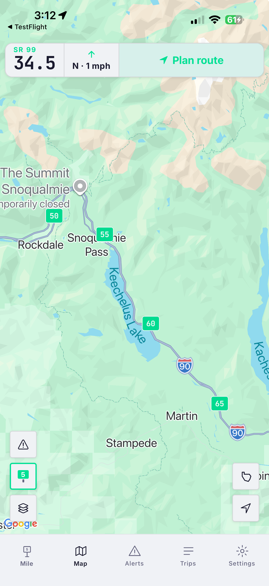
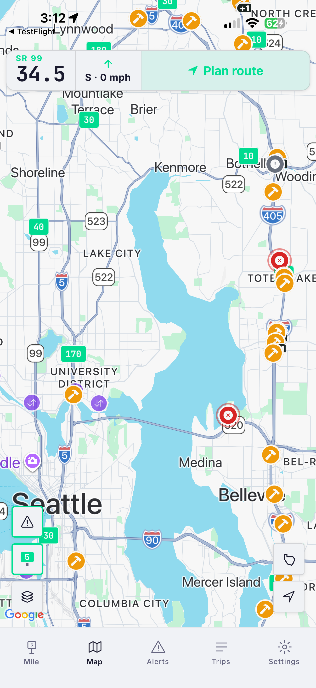
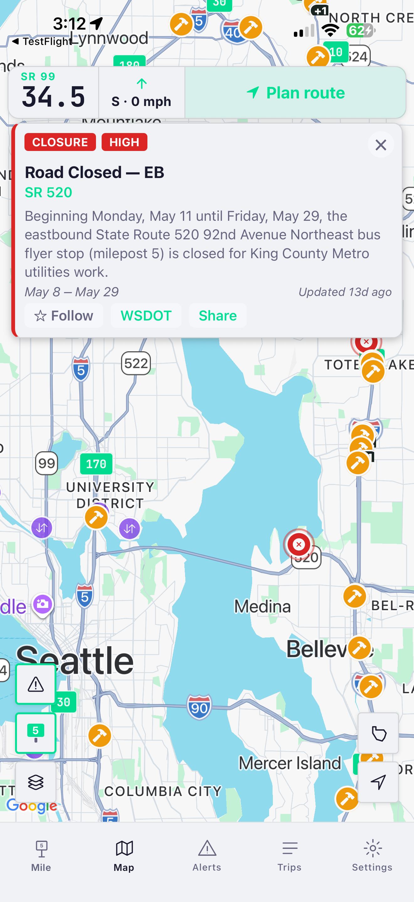
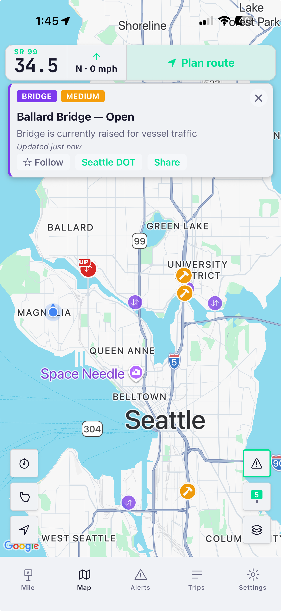
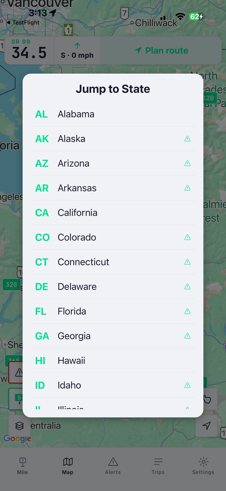
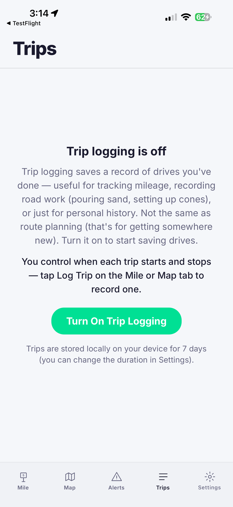
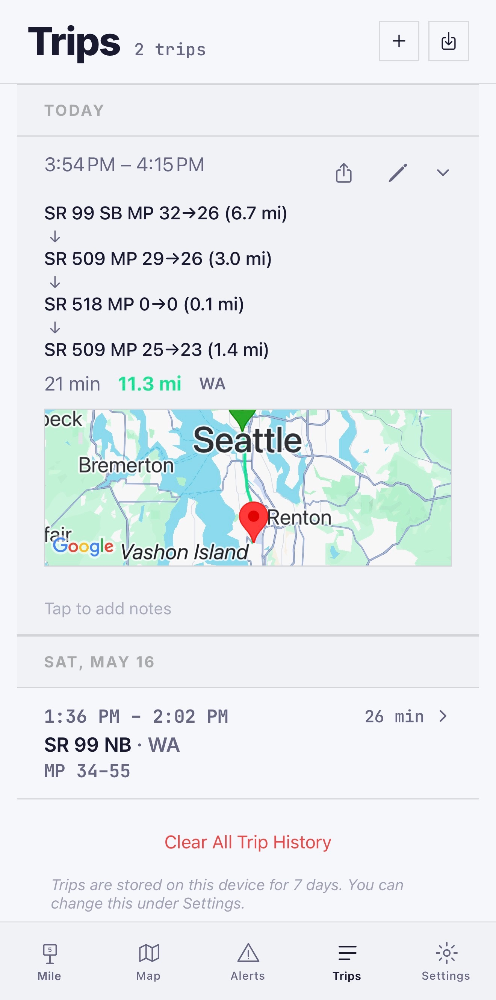
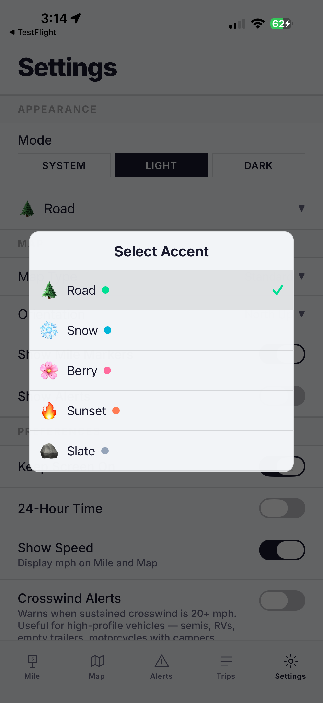

01
Navigate to any mile marker with one tap New
Hands off to Google Maps, Apple Maps, or Waze with the milepost as your destination. The first nav app where a mile marker is a destination, not just a sign.
iOS · Android · 50 US states
Real-time mile markers in all 50 US states. Live road alerts from 42 state DOTs. Navigate to any mile marker on the map — because a milepost isn't just a number on a sign. It's how help finds you.
🚗 CarPlay approved — building now
Your mile marker is always free. Premium — map, live alerts, trip tools — $9.99/yr or $1.99/mo, 7-day free trial.
Why MileCheck
Truckers, road crews, and EMTs were left out of the iOS-only mile marker app ecosystem for years. We built MileCheck on both platforms from day one — the same code, the same offline data, the same mile markers in all 50 states.
Closures, crashes, construction, weather warnings — pulled directly from 42 official state DOT feeds, not scraped from third-party sources. When your state DOT publishes an alert, MileCheck users see it. The integration corpus expands state by state, with new states added weekly toward all 50.
Apple’s Driving Task entitlement — the same approval required of dedicated navigation apps — was granted in June 2026. MileCheck is the only app in its category cleared for CarPlay. In-dash mile markers are in development now.
What drivers say
“The app I didn’t know I needed and now cannot live without! I drive the passes a lot to go snowboarding and this is so much easier to figure out conditions and where traffic starts/ends so I know which shortcuts to take! Insanely helpful!”
dayjules · App Store review
Coverage
Mile markers in all 50 states. Live DOT alerts in 42 and counting — new states added every week. Pick a state below and explore the live data.
The same milepost data that powers the app, straight from our servers — pick a state, zoom in, and explore.
Loading mile markers…
Always current
Roads change. New highways open, routes get reclassified, signs get moved during construction and knocked down in storms. MileCheck is built to keep up — on both layers.
Closures, crashes, construction, weather and chain controls come straight from each state DOT and update continuously — so what you see is what’s happening on the road right now.
We’re adding live DOT coverage state by state — 42 of 50 today and climbing. Mile markers already cover all 50.
As states re-sign, rebuild, or reclassify routes, we review and correct the milepost data — so the number on your screen keeps matching the sign on the road.
Our story
My dad took a seasonal job driving snowplows for ODOT. Before long I realized how much of that job revolves around mile markers — every radio call, every crash report, every road closure. They’re how crews track where sand, salt, and brine have been applied, and how dispatchers coordinate a response.
If you call for help on a mountain highway, how do you tell anyone exactly where you are? That’s what mile markers are for. Most drivers pass hundreds of them without a second thought. But the people who keep roads open, respond to emergencies, and help stranded motorists rely on them every day.
There was one app for this, but it only worked on iPhone. My dad uses Android. So I built him a web app that showed his nearest Oregon mile marker from GPS. My mom, my sister, and I spent hours driving highways and back roads, checking numbers, making adjustments. I still remember the first time the number changed at exactly the right moment.
My dad showed it to coworkers. They showed it to others. Feedback came from truck drivers, road crews, first responders, and everyday drivers. Nearly every feature in MileCheck exists because someone on a real road asked for it.
What started as a simple tool for my dad turned out to be useful for a lot of other people, too.
Find your milepost free — it’s how help finds you.
Get the app →See it











Who it's for
Dispatch needs an exact location. The mile marker just blew past you at 65 mph.
MileCheck reads your nearest mile marker in real time. One number to report.
You’re responding to a crash and need to confirm the milepost fast — or you’re laying salt, sand, or brine and logging every pass on paper, then burning another hour after a 12-hour shift typing it into the system.
Live mile markers, a DOT incident overlay, and one-tap trip logging that exports at the end of your shift — no re-entering a paper log after 12 hours on the road.
You’ve got a flat on a dark highway, service is spotty, and you’re halfway between mile markers. “I’m somewhere on the highway” won’t help anyone find you.
Pull up MileCheck: “I-90 westbound, between mile 142 and 143.” Read it to whoever’s coming, or tap share to send it — a real location, not a vague pin in a green field.
Closures, crashes, construction. You’d rather hear about them before you hit them.
Check your highway route in advance — delays, closures, crashes, construction, each showing when the DOT last updated it, urgent and long-term alike. Follow the ones you care about. In Seattle, see if a drawbridge is up before you head home or into the city.
Your driver is stuck at “somewhere between Pendleton and Boise.” You need to send help to a specific point on a specific highway.
MileCheck gives every milepost a coordinate, a state, a route, and a navigate-to button. Dispatch reads one number. Field crew taps Maps and goes.
What's in the box
Hands off to Google Maps, Apple Maps, or Waze with the milepost as your destination. The first nav app where a mile marker is a destination, not just a sign.
Every interstate, US highway, and most state routes. Bundled offline so you keep working in no-service areas.
Closures, crashes, construction, weather, chains. Direct from 42 state DOTs — see the map ↓. New states added weekly toward all 50.
Plan a corridor, see only the alerts affecting your drive. Hand off to your nav app when you're ready.
Opt in when you want it. Records your route with multi-segment tracking, stays on your device, never transmitted.
Cross from Idaho into Montana. The state, the route format, and the live data source all switch automatically.
Mile marker data ships with the app. No download, no setup, no “oops you’re in a canyon” moments.
Follow any of Seattle’s six drawbridges — Fremont, Ballard, University, Montlake, South Park, and 1st Ave S — and get a push notification the moment one goes up. Useful if you commute over the ship canal or into SoDo and want a heads-up before you hit the queue.
Apple’s Driving Task entitlement was granted in June 2026 — the same approval level as dedicated navigation apps. The in-dash MileCheck experience is in development now.
Pricing
Finding your mile marker is always free — no account, no trial, no paywall, even in an emergency. And no ads, ever. The subscription adds the map, live DOT alerts, and trip tools.
Always free, even in an emergency — your location is never behind a paywall, and no ads, ever.
Early adopter rate — locked in for life, even when the price rises.
How we work
MileCheck is founder-built and moves fast. Drivers tell us what they need — and we ship it, often the same week. No committees, no roadmap purgatory.
Driving a state we don’t cover yet, or want a feature? Tell us — we read every message. Send feedback
FAQ
It shows your nearest highway mile marker in real time, anywhere in all 50 states — plus live road conditions and alerts pulled straight from state DOTs. You always know exactly where you are, and what’s ahead on your route.
Positions come from official state DOT milepost data and are interpolated to the nearest tenth of a mile, so the number on your screen matches the signs on the road. We continuously review and correct the dataset as states re-sign or rebuild routes.
Mile markers in all 50 states. Live DOT alerts in 42 states today, growing toward all 50.
Yes. Mile markers are stored on your phone, so they work in dead zones with no signal. Live alerts need a connection to pull the latest conditions from the DOT.
Your current mile marker is always free. Premium — the live map, DOT alerts, and trip tools — is $9.99/yr or $1.99/mo, with a 7-day free trial.
Those apps don’t show highway mile markers at all, and they don’t normalize state DOT alert feeds. MileCheck is built around exactly that — the milepost you’d read to a 911 dispatcher, and the live conditions on your specific highway.
Your location stays on your device. MileCheck doesn’t sell or upload your location history. See our privacy policy for details.
For partners and platform builders
MileCheck operates a multi-state mile marker + DOT alert ingestion platform that today serves consumer drivers on iOS and Android. The same data layer — 50 states of bundled mileposts, 42 state DOT integrations and growing, normalized route mappings, navigate-to-milepost handoff — has direct relevance to fleet management platforms, mapping and navigation tools, 511 traveler-information operators, digital freight brokerages, and roadside assistance providers.
If you're working on something where precise highway location matters — whether that's API access, data licensing, integration partnerships, or something we haven't thought of — we'd like to hear from you.
For platforms and partners
50 US states of bundled mile markers. 42 state DOT integrations, expanding weekly toward all 50. Normalized route mappings across 19 distinct DOT platform formats. A consumer-grade mobile interface already shipped to iOS and Android.
Most milepost data products stop at the static layer: “where is MP 142?” MileCheck delivers both layers — that milepost lookup plus what’s happening at MP 142 right now, live from 42 state DOT feeds. One integration, one schema, one normalized API response.
Open a conversation →The infrastructure
Every interstate, US highway, and most state routes across all 50 states — sourced directly from official state DOT and government GIS milepost records, never crowd-sourced or estimated. Real signed-marker coordinates, route IDs, direction, and mile numbers, quality-checked per state for outliers and bad coordinates, normalized across state-by-state inconsistencies, and interpolated to one-tenth-of-a-mile precision between markers. Bundled offline in the consumer app for no-service operation; available as a structured dataset for platform integration.
42 state DOTs integrated and growing. Each integration handles a different upstream platform format — 19 distinct platform shapes in all. A serverless dispatcher normalizes every source into a single consistent road-conditions and incident schema, with caching tuned per source and resilient fallbacks for agencies with restrictive access.
The first consumer nav stack where a mile marker is a destination, not a display element. Tapping a milepost in the map hands off to Google Maps, Apple Maps, or Waze with the milepost coordinate as the routing target. Direct workflow value for dispatch-to-driver handoffs in fleet, roadside, and emergency-response use cases.
Apple’s Driving Task entitlement was granted June 2026. This entitlement requires a separate Apple review of an app’s navigational utility — it’s not a standard developer-portal option, and most apps in the transportation space don’t qualify. MileCheck passed that review. The in-dash experience is in development now; the same data layer ships to the vehicle screen.
Why it matters
Most consumer navigation apps (Google Maps, Apple Maps, Waze) don't include mile markers as a routing primitive. The data exists at the state DOT level, but it's locked behind 50 different platforms, 19 distinct API formats, and a long tail of state-by-state inconsistencies in route naming, milepost intervals, and direction encoding. Building it in-house means starting from scratch on all 50 — discovering each platform, working through access one agency at a time (many DOT feeds aren’t public; each has its own registration, and some require emailing or calling the agency directly for credentials), and re-solving every route-normalization edge case along the way.
MileCheck has done the integration work. The result is a unified, normalized, real-time highway location layer with a consumer-grade mobile interface as proof of operation. The same layer can power:
And it’s been field-tested by the people it’s built for. Real DOT workers ran MileCheck in their daily work and sent feedback every day through development — domain validation from actual end users that an internal team can’t easily reproduce. The product is already shaped by the operators who live on the road.
Build vs. license: Replicating this infrastructure means 42 state API negotiations, 19 distinct integration patterns, and 18+ months of DOT access work — before a line of normalization code is written. Licensing starts at a conversation.
Who we talk to
Telematics platforms and driver apps where mile-marker reporting closes the dispatch-handoff gap. MileCheck integrates as an SDK, an API, or a parallel app surface — whatever fits your driver-UX architecture.
Mapping and navigation platforms can add a milepost layer to their tile data without negotiating 50 state DOT contracts. We’ve done the normalization work and can deliver as a continuous data feed or a per-state corpus.
Cross-state aggregation of DOT alerts under one normalized schema. Useful for interstate corridor consortia, regional 511 operators, and state agencies seeking neighbor-state integration without bilateral negotiations.
Load matching, track-and-trace, predictive ETA — all benefit from milepost-precision origin and destination targeting. The "drop trailer at MP 87 of I-80" workflow is currently impossible in consumer nav. MileCheck makes it routable.
Service vehicle ETA, 911 dispatch routing, and field-crew navigation all depend on dispatch precision. MileCheck’s navigate-to-milepost capability eliminates the “find a closest address” workaround that today bottlenecks roadside and emergency response.
State DOTs, regional 511 operators, and multi-state transportation consortia seeking to consolidate cross-state data access or add a normalized condition layer to existing public-facing traveler information products.
Ways to work together
Each conversation starts at info gathering. We don't have a salesperson. You'll be talking to the founder.
Where the work is
↗ Live API status · DOT feed uptime monitored 24/7
And it runs lean. The whole platform — a Cloudflare Worker, R2 storage, Expo, and a lightweight routing API — runs on a small fixed monthly cost, with no metered dependency on expensive turn-by-turn nav-API pings. Margins scale with users, not with infrastructure spend.
Where it goes next
Alert classification and filtering already improve continuously — sorting closures, crashes, construction, and weather by severity, route, and direction, and getting sharper with every state added. The same engine that normalized 42 state DOTs extends to entirely new authorities and transportation modes. We've already proven it once at the city level.
Real-time Seattle drawbridge status — Ballard, Fremont, University, Montlake and more — is already live via SDOT. The same pattern extends to any city's bridges, signals, and closures.
County road authorities publish closures and conditions no consumer app surfaces today. Same integration model, an untapped layer of coverage.
Highway-rail grade crossings, crossing delays, and freight-rail conflicts — safety-critical data absent from every consumer navigation app.
Ferry schedules and status, drawbridge openings, and waterway crossings — the first- and last-mile gaps for coastal and island corridors.
Open a conversation
For partnership and platform inquiries, contact info@milecheckapp.com.